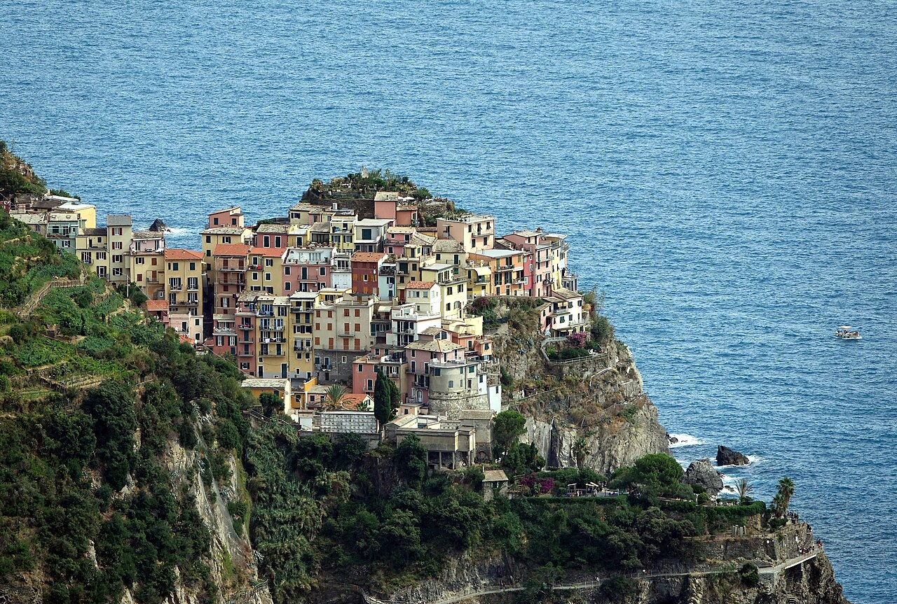

Cinque Terre from La Spezia · 5-day family itinerary
Four nights in La Spezia and the villages by train, because on 23 October 2026 the park’s trail list showed the coastal path from Riomaggiore to Corniglia as closed. One day is kept loose for a weather alert, and the Via dell’Amore can go back in if it reopens.

Photo: Gzen92, Village (Manarola) (1), CC BY-SA 4.0, via Wikimedia Commons.
_(1).jpg){kind=link}
Checked before you commit
This illustrative route arrives at La Spezia Centrale, stays four nights there and reaches the villages by regional train on a three-day Cinque Terre Train Card. The Cinque Terre National Park’s trail-status, card, Via dell’Amore, travel and news pages, and the Via dell’Amore booking site’s FAQ and ticket pages, were checked on 22 and 23 October 2026. Nothing was booked.
Day 1 arrives in La Spezia. Day 2 takes the train to Riomaggiore and on to Manarola, with the Via dell’Amore only if the park lists it open. Day 3 rides the train to Vernazza and Monterosso instead of walking between them. Day 4 is Corniglia and the swap day. Day 5 is the train out.
One or two villages a day for a ten-year-old and a seven-year-old, from one base, so nobody repacks. The card covers regional trains from La Spezia to Levanto and the village buses, so a tired afternoon ends with a train back, not a walk. The decision about tomorrow is made at dinner, after the park’s alert check.
The La Spezia stay, any Via dell’Amore slot and the cards were not checked for your dates. Euro figures are the park’s published prices on 23 October 2026 and are not converted. A booking-hub link is intent only. It doesn’t hold a slot, a room or a card.
Planning boundary: dates are illustrative; the worked example runs Monday 30 November to Friday 4 December 2026. On 23 October 2026, the park’s trail list showed Riomaggiore–Manarola (the Via dell’Amore) and Manarola–Corniglia as closed, Corniglia–Vernazza as expert-grade and Vernazza–Monterosso as walkers’ grade.
The park’s own trail pages can differ from its list, so check both on the day. A park notice of 10 September 2026 had closed Corniglia–Vernazza–Monterosso for geological checks, and we found no reopening notice. Alfred doesn’t check trail status, weather alerts or rail works. Book opens a partner checkout; it doesn’t prove a booking.
Route and family-coordination brief
Party: two adults, one ten-year-old and one seven-year-old. Base: four nights in La Spezia. Pace: moderate, one anchor a day. Budget input: Mid Range. Published fees appear only where an official page states them; nothing is totalled as a family quote.
Getting around: trains. The park says trains stop at all five villages, that La Spezia is the terminus where long-distance trains stop, and that ferries run in spring and summer. This December plan has no boat day and no hire car.
The Cinque Terre Train Card covers unlimited regional trains between La Spezia and Levanto, the buses within the villages and the Via dell’Amore, which still needs a booked slot and can’t be bought on its own. For 2 November to 31 December 2026, the park lists a three-day family card at €89.10 for two adults and one or more children aged 4 to under 12. Children under 4 go free with an adult card holder.
Card rules worth knowing: a three-day card runs until midnight on the second day after its start date, so start it on Day 2, not on the arrival afternoon. Its date can be changed once, at least 24 hours ahead, within the same price band. Light rain gives no refund. An orange or red alert, force majeure or a train strike can. The park says trail access is not guaranteed and may be limited for crowds or safety.
Rail works: RFI is upgrading Riomaggiore and Manarola stations, including restoring Riomaggiore’s two lifts. Trains between Corniglia and La Spezia stop for 48 hours on the weekends of 14–15 November, 19–20 December, 9–10 January and 6–7 February. Our worked dates avoid those weekends. We couldn’t confirm when the lifts return, so plan for station stairs with a pram.
Day 1 — Arrive at La Spezia Centrale, set up the card, read the trail list
Arrive at La Spezia Centrale and settle into the base. The park says La Spezia is the terminus of the Cinque Terre line and a stop for long-distance trains on the Pisa–Genoa line, which is why we stay here rather than in a village. Keep the first evening to a short walk near the hotel and an early dinner.
Buy the three-day Cinque Terre Train Card, dated to start tomorrow. The park sells cards at its Infopoints in the stations from La Spezia to Levanto, or online. Each card is personal and checked with ID, so have everyone’s documents to hand.
Tonight’s decision: open the park’s trail-status list and its news page. If a weather alert has been declared for tomorrow, swap Day 2 and Day 4 before you sleep.
Fallback: if you arrive after the Infopoint has closed, buy the card online, or at an Infopoint in the morning before the first train.
Live-check: your train into La Spezia; the card’s start date; the park’s news page for alerts and rail works.
Day 2 — Riomaggiore and Manarola by train, the Via dell’Amore only if it reopens
Take a regional train to Riomaggiore and explore the village and its harbour, then ride one stop on to Manarola for lunch. Take the train back to La Spezia in the afternoon. On 23 October 2026 the park’s trail list showed the Via dell’Amore, the walk between the two villages, as closed, so this day is planned by train.
The Via dell’Amore’s own trail page still showed it as tourist-grade with no weather alert, so the list and the page disagreed. Check the list that morning. If the walk has reopened, entry is by booked slot with limited places, one way from Riomaggiore to Manarola in about 30 minutes. From 26 October 2026 to 28 March 2027, the park lists it open from 9 am to 6 pm, with last entry at 5.30 pm.
The park numbers this stretch 592-1, the first section of the coastal path, and lists it at 1.112 km; the booking site’s FAQ says 900 metres. Either way, it is the shortest section of the path, and its entrance is on the left as you leave Riomaggiore station. The booking site says a free guide waits at the gate. Book a slot only once the list shows it open.
Fallback: if you do book, Via dell’Amore tickets can’t be changed, but the booking site says a late arrival can use the first slot with space. In an orange or red alert, expect the park to close its whole trail network, as it did on 20 October 2026; the card’s rules allow a refund for those alerts. Spend the day in La Spezia instead.
Live-check: the park’s trail-status list that morning, and whether the Via dell’Amore has reopened; your slot time if you book one; station access at Riomaggiore and Manarola, where rail works are under way.
Day 3 — Vernazza and Monterosso by train, not on the coastal path
Take the train to Vernazza and walk to the harbour, then ride one stop on to Monterosso for lunch and a slow afternoon by the sea. Take the train back to La Spezia before dark.
We ride between them on purpose. On 23 October 2026 the park’s trail list graded the path from Vernazza to Monterosso (592-4, about 2 hours and 3.7 km) for walkers, one step below expert, though its own trail page still showed expert. That page also notes a Monterosso ordinance of 24 August 2026 closing the Servano stretch, with access via Via Corone. With a seven-year-old, the train is the plan.
Fallback: in steady rain, keep one village and go back early. The card covers unlimited regional trains between La Spezia and Levanto, so turning round costs nothing extra.
Live-check: the park’s trail-status list and news page; return train times.
Day 4 — Corniglia by stairway or village bus: the swap day
Corniglia sits above its station. The park’s trail page describes the Lardarina stairway up from the station: 33 flights and 377 steps. The card also covers the park’s buses within the villages, so check the Corniglia bus times the night before and decide which way up suits small legs. Come back to La Spezia for a quiet afternoon.
This is the swap day: if Day 2 or Day 3 falls on an alert, swap it with today. If you booked a Via dell’Amore slot for an alert day, the ticket can’t be moved, so ask the park about a refund under the card’s alert rules.
Fallback: the three-day card runs until midnight tonight, so a rained-out Corniglia morning can become a short train hop to whichever village is dry by the afternoon.
Live-check: the park’s bus timetables and trail-status list; the alert check on the park’s news page.
Day 5 — Train out of La Spezia with a morning buffer
Pack before breakfast and take the train out of La Spezia Centrale with time in hand. The Train Card ended at midnight, so buy a normal ticket for the onward journey.
Fallback: with an early train, have breakfast near the station instead of at the hotel.
Live-check: your train time; the park’s news page for any new RFI works notice on the line.
Planning notes
Dates are illustrative. At decision time, recheck the park’s trail-status list and trail pages, its news page for weather alerts and rail works, the Via dell’Amore hours and booking rules, the card prices and rules for your dates, and your train times. A travelling profile is required, and the adults, children and ages Alfred plans for come from the travellers on that profile.
On web Lets Go, Holiday takes origin, destination, dates, a budget step and a day pace, then Plan my trip queues the itinerary. Moderate day pace fills a morning and an afternoon slot, with lunch and dinner. The Estimated costs bar, when it appears, is a rounded median of flight-and-hotel packages, not a quote.
While the trip is still Planning, you can keep or change the hotel and then the flights Alfred picked. Holiday takes one destination. We did not test whether city search offers La Spezia or the Cinque Terre villages.
Once the trip is ACTIVE, you can edit an item’s title, times and notes, so “Riomaggiore and Manarola by train; check the park’s trail list at breakfast; Via dell’Amore only if open” can sit on the card. In Hey Alfred you can ask to swap two full days, and you confirm before it is applied. Book opens a partner checkout for flights and hotels, activities, eSIMs and travel insurance. It doesn’t check trail status or weather alerts.
Plan a trip
Start with your people, dates and pace, then review the editable plan before booking.
Plan a trip